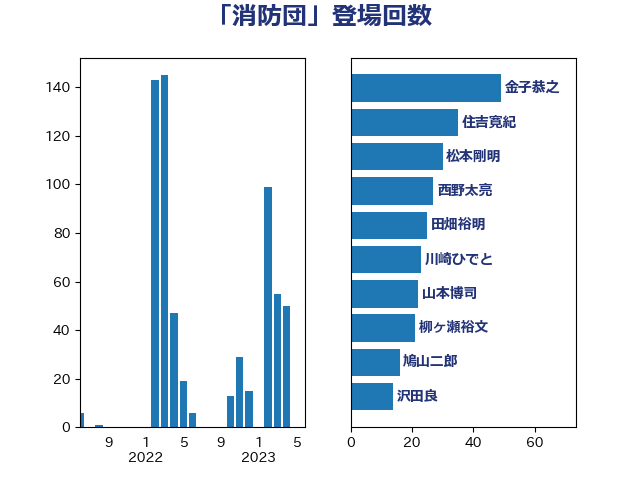

単語「消防団」

| 金子恭之 | 自由民主党 | 49 回 |
| 住吉寛紀 | 日本維新の会 | 35 回 |
| 松本剛明 | 自由民主党 | 30 回 |
| 西野太亮 | 自由民主党 | 27 回 |
| 田畑裕明 | 自由民主党 | 25 回 |
| 川崎ひでと | 自由民主党 | 23 回 |
| 山本博司 | 公明党 | 22 回 |
| 柳ヶ瀬裕文 | 日本維新の会 | 21 回 |
| 鳩山二郎 | 自由民主党 | 16 回 |
| 沢田良 | 日本維新の会 | 14 回 |
| 尾身朝子 | 自由民主党 | 14 回 |
| 白石洋一 | 立憲民主党 | 12 回 |
| 小沢雅仁 | 立憲民主党 | 12 回 |
| 馬場雄基 | 立憲民主党 | 9 回 |
| 片山大介 | 日本維新の会 | 9 回 |
| 野田国義 | 立憲民主党 | 8 回 |
| 重徳和彦 | 立憲民主党 | 8 回 |
| 滝波宏文 | 自由民主党 | 8 回 |
| 緒方林太郎 | 無所属 | 7 回 |
| 芳賀道也 | 国民民主党 | 6 回 |
| 田所嘉徳 | 自由民主党 | 6 回 |
| 三反園訓 | 無所属 | 6 回 |
| 江島潔 | 自由民主党 | 5 回 |
| 佐藤啓 | 自由民主党 | 5 回 |
| 西岡秀子 | 国民民主党 | 4 回 |
| 中西祐介 | 自由民主党 | 4 回 |
| 鈴木義弘 | 国民民主党 | 3 回 |
| 谷公一 | 自由民主党 | 3 回 |
| 藤木眞也 | 自由民主党 | 3 回 |
| 岬麻紀 | 日本維新の会 | 3 回 |
| 古川康 | 自由民主党 | 3 回 |
| 中川宏昌 | 公明党 | 3 回 |
| 中司宏 | 日本維新の会 | 3 回 |
| 長谷川英晴 | 自由民主党 | 2 回 |
| 赤澤亮正 | 自由民主党 | 2 回 |
| 岩谷良平 | 日本維新の会 | 2 回 |
| 寺田静 | 無所属 | 2 回 |
| 寺田稔 | 自由民主党 | 2 回 |
| 佐藤正久 | 自由民主党 | 2 回 |
| 上田清司 | 国民民主党 | 2 回 |
| 上杉謙太郎 | 自由民主党 | 2 回 |
| 三浦靖 | 自由民主党 | 2 回 |
| 青木愛 | 立憲民主党 | 1 回 |
| 道下大樹 | 立憲民主党 | 1 回 |
| 近藤昭一 | 立憲民主党 | 1 回 |
| 石井章 | 日本維新の会 | 1 回 |
| 湯原俊二 | 立憲民主党 | 1 回 |
| 渡辺創 | 立憲民主党 | 1 回 |
| 深澤陽一 | 自由民主党 | 1 回 |
| 櫻井周 | 立憲民主党 | 1 回 |
| 横山信一 | 公明党 | 1 回 |
| 柘植芳文 | 自由民主党 | 1 回 |
| 松下新平 | 自由民主党 | 1 回 |
| 平木大作 | 公明党 | 1 回 |
| 室井邦彦 | 日本維新の会 | 1 回 |
| 奥野総一郎 | 立憲民主党 | 1 回 |
| 塩崎彰久 | 自由民主党 | 1 回 |
| 国定勇人 | 自由民主党 | 1 回 |
| 古賀之士 | 立憲民主党 | 1 回 |
| 務台俊介 | 自由民主党 | 1 回 |
| 八木哲也 | 自由民主党 | 1 回 |
| 仁木博文 | 無所属 | 1 回 |
| 中谷真一 | 自由民主党 | 1 回 |